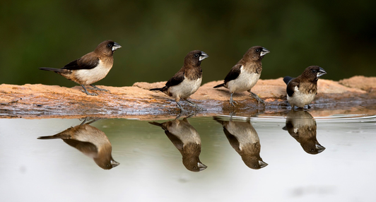

Taking The Goodness In, And Using It Well
 When many of my freinds through the years speak of pets they are mostly engaged in conversations about dogs, many cats, an iguana here and there, hamsters, a few snakes and so on. Our family pet growing up was a Myna Bird! My father ordered it from India and had it delivered to a pet shop on his route as NYPD law enforcement. I remember my sister and I being very excited to see the surprise in that gigantic box Zee came home in. We fed Zee dog food (gaines meal) that what he liked. He was a fiesty ole bird; if you got too close to his cage he would peck with his beek and we basically stayed clear of him except for when we wanted to show him off and encouraged him to speak or whistle. He loved our mother as if she was his mother. We had a double sink in our kitchen and my Mom would put Zee in one side cover it for his bath. He'd be there all quiet in the dark probably and until my Mom would say "bathe Zee" and then he'd begin splashing all around like he understood english. Or she'd tell him "Whistle Zee" she'd whistle a tune and he"d follow along... Zee was funaaaaaay and a fabulous pet to grow up with.
{kind=link}